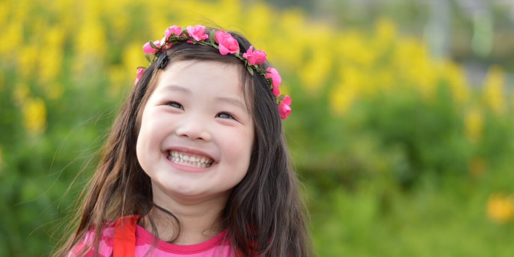
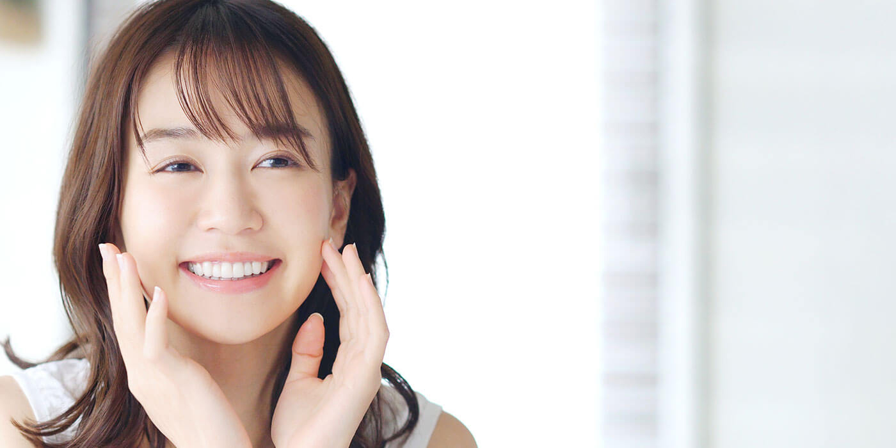
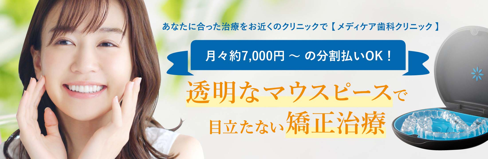
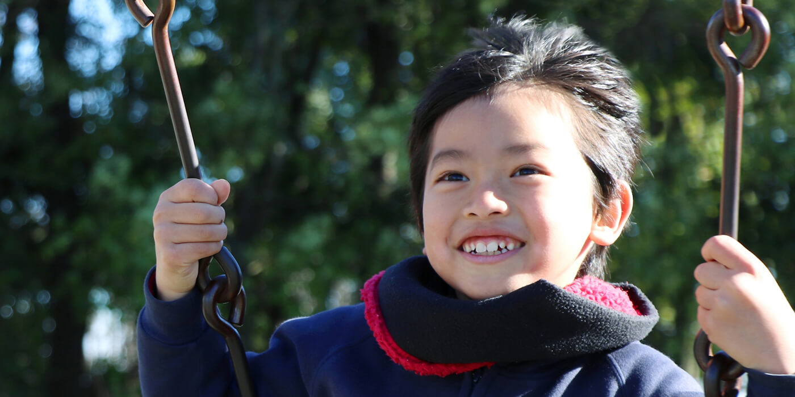
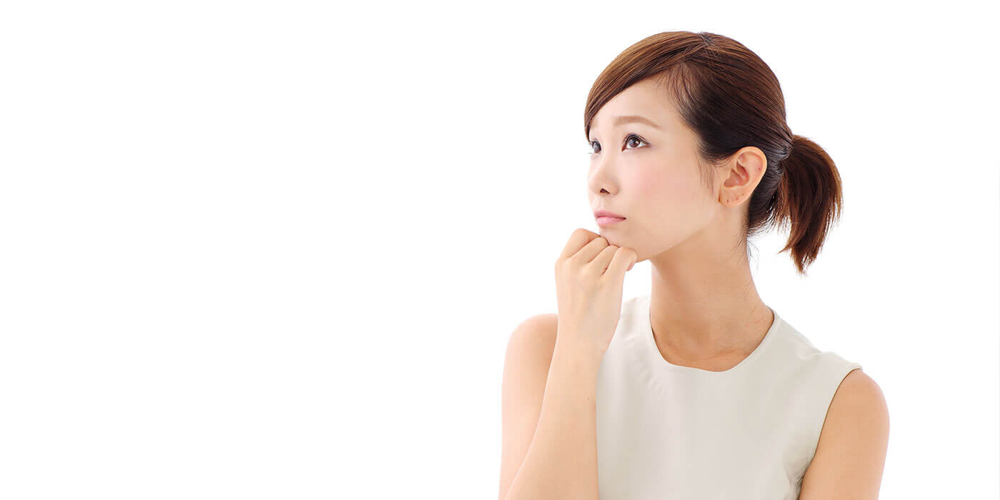
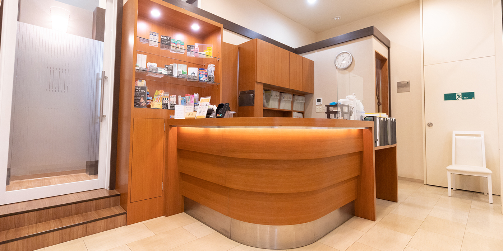

矯正歯科ORTHODONTICS

「きれいになること」を選んだ皆様はきっと楽しく、気持ちよく暮らしたい人。そんな前向きな皆様に対し私たちは、審美と心美を育めるようなお手伝いをしたいと考えています。きれいな歯並びがあなたの、そしてお子さんの将来を明るくします。
歯並びをよくすることで 最新の成人矯正 こどもの矯正治療 矯正治療のQ&A 矯正治療の流れ
歯並びをよくすることで
- 笑顔のために
あなたの笑顔が、今までと違った印象を相手に与えられるでしょう。 - 集中力アップのために
良く咬むことによって頭が活性化され、集中力が増加すると言われています。 - スポーツのために
歯並びを良くしてしっかり咬めば、運動能力が向上し、集中力もアップします。 - 口臭予防のために
歯並びが悪いとムシ歯や歯周病になりやすく口臭の原因として注目されています。 - 歯科治療にかかる時間とコストを節約するために
歯並びが悪いと一生ムシ歯や歯周病と戦うリスクが増えます。
「笑うこと」が免疫力を高めて健康に良いことは、医学的に証明されています。また、きれいな歯並びと白い歯には、アンチエイジング（抗加齢）効果があります。いつまでも若々しく健康でいるためには、歯を出しておもいっきり笑うことが欠かせません。
最新の成人矯正

当歯科医院は、世界的に認められた最新の４つの治療システムを導入しております。患者様のご希望を聞きながら、一緒に装置の選択をします。（各システムごとに治療費は異なります。）
アライナー矯正
アライナー矯正「インビザライン」・「クリアコレクト」
透明なマウスピースを装着しているだけで、歯並びがきれいに整ってきます。一番の利点は取り外しが可能で、見た目にも目立たないことです。
食事や歯磨きのときは外すことができます。また、違和感も少ないです。この装置には幅広い用途があります。ブラケットと併用することで、固定式装置の装着期間を短縮するのに用いることもできます。症状によっては適応できない場合があるので、ご相談ください。
当院では、「インビザライン」や「クリアコレクト」をご用意しており、患者さまのご要望に合わせてご提供しております。
審美ブラケット
透明なブラケットなので目立ちません。話題のデーモンシステムやクリアスナップなどのローフリクションシステム（弱い力で効率的に歯を動かすことが可能）の導入により、従来の矯正治療と比較し、短期間で痛みも少ないです。さらに、歯と同じ色の目立たないワイヤーの選択もできます。
裏側矯正
歯の裏側に装置を装着するため、装置が見えません。しかし、外側の装置に比べて違和感が強いため、発音がしづらいなどの欠点もあります。表側のブラケット装置とミックス（ハーフリンガル）することもできるので、専門医までご相談ください。
マイクロスクリュー（MIA）
歯の周りの骨に小さなスクリューを埋め、そのスクリューから歯を引っ張ります。歯並びのズレが大きい場合に用いることがあります。矯正歯科の分野では世界的にスタンダードになりつつある装置です。
歯に無理な負担をかけずに、正確に歯の移動がコントロールできるため、治療効果の向上と治療期間の短縮が可能です。また、取り外しも簡単で安全なのでご安心ください。
こどもの矯正治療

国際社会に出ていく子供たちにとって「きれいな歯並び」は基本的なマナーになりつつあります。今後は、自己管理・自己表現のひとつとして重要視されるでしょう。
小児矯正から始めるメリット
- こどもの負担を軽減できる
小児矯正は成人矯正とは違い、基本的に取り外し可能な装置を用います。学校に行く時は装置を付ける必要はほとんどありません。固定式の装置を用いる場合もありますが、部分的にごく短期間の使用で済みます。 - 永久歯の生えてくる隙間の確保
永久歯が出てくる場所の隙間が少なければ、歯並びは悪くなります。この隙間を確保したり広げることができます。将来、成人矯正が必要になった場合でも、歯を抜いて治療する可能性を低くすることができます。 - 顎の骨の成長コントロール
不正咬合には「歯並び」によるものの他に、あごの骨の位置異常や大きさの問題によるものがあります。顎の成長バランスをコントロールすることで、正しい骨格形成を行えるのは成長期だけです。 - 見た目の改善
感受性豊かな学童期に、一番目立つ前歯をきれいに整えることはコンプレックスをなくし、明るく積極的な人格形成の一助になります。 - 虫歯予防
将来ムシ歯の数を減らすために一番大切な時期は学童期です。生えてきたばかりの永久歯は弱く、ムシ歯になるリスクが高いからです。歯並びを早くに整えることで歯みがきがしやすくなり、ムシ歯や歯肉炎のリスクを大幅に軽減できます。
矯正治療のQ&A

これから矯正治療を始める方やお悩みの方や治療中の方の中には、矯正治療に関する多くのお悩みを抱えている方がいらっしゃるのではないのでしょうか。これまで治療を受けれた方が実際に質問された内容を下記に記載していますので、ぜひご覧ください。
Q いつから始めるのがいいでしょうか。
矯正治療は何歳からでも始められますが、気付いたときにすぐ相談がよいでしょう。
Q 歯並びの悪さは遺伝なの？
親兄弟の顔や体型が似るように、歯並びもかなりの確率で遺伝します。しかし、遺伝だからといって治しにくいことはありません。また、日常なに気なくしてしまっている癖さえも、歯並びを悪くすることがあります。例えば、指しゃぶり、爪や唇をかんだり、舌を前に出す癖や口で呼吸をする癖も治したほうが良いでしょう。
Q 部分的に装置をつけて治療する事はできますか？
咬み合わせは上下の歯並びの関係で成り立っていますので、基本的に上下全て歯に装置を付けて理想的な位置まで動かしていかなければなりません。しかし歯並びの程度によっては、100％理想的な歯並びにならないかもしれませんが、一部のみ装置を付けるプチ矯正（部分矯正）ができる場合もあります。まずはご相談ください。
Q 矯正治療中は痛みがありますか？
個人差はありますが歯が浮いたような違和感や、咬むと痛いといった症状が現れることがあります。我慢できないほどのものではありませんし、数日で痛みはなくなります。痛みに弱い方には、痛み止めを処方することも可能です。
Q 矯正装置によっては発音しにくい
矯正装置を付けることによって、一時的に発音しにくくなることはありますが、慣れるにしたがって発音も回復しますので心配ありません。以前、テレビのアナウンサーの矯正治療にたずさわったことがありましたが、『慣れてしまうと特に問題ない』と言われていました。
Q 装置をつけてスポーツしても大丈夫？
通常のスポーツ（野球・サッカー・剣道・テニスなど）であれば問題ありません。テニスプレイヤーのヒンギスも矯正治療をしていたんですね。スポーツ選手は咬むことで力を発揮するので、咬み合わせがとても大切なんです。
矯正治療の流れ

みなさまが快適にかつスムーズに治療が受けられるような治療体制を整えています。これからどんな治療が始まるのか不安な方は、ぜひ当院の矯正治療の流れを一度ご覧ください。
矯正治療の流れ
初診相談(約30分)
歯並びに関する悩みや疑問点などについてお話を伺います。完全予約制となっておりますので、お電話、もしくは直接受付までお申し出下さい。
精密検査(約1時間)
患者様の希望があれば、精密検査（レントゲン写真、顎関節の診査、歯型模型の作製など）を行い治療計画を立案する準備に入ります。
治療計画の説明(約30分)
検査結果を徹底的に検討し、患者様に最適と思われる治療方針が決定いたします。患者様自身に治療に関するご希望がある場合はそれをお聞きし、お互いに納得した治療方針を決定いたします。
装置の装着(30分〜1時間)
治療計画に沿った装置を２～４回に分けて装着していきます。
毎回の調整(10分〜30分)
矯正装置を装着した後は、１～２ヶ月に1回の通院で済みますので、忙しい方でも心配ありません。また、治療中は歯みがきがしづらくなりますから、定期的にクリーニングを行い、治療中の口腔衛生をサポートします。
矯正装置の除去(約1時間)
きれいな歯並びになったところで、1～2回に分けて矯正装置を外して、歯の表面をピカピカに磨き上げます。
メンテナンス(約15分)
治療後の歯並びを安定させるため、年に数回メンテナンスをします。
まずはご相談ください
私達は患者様からお口の健康を任せていただけるように、頼りがいのある歯科医院を目指しています。お口のトラブルがございましたら、お気軽にご相談ください。